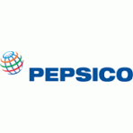
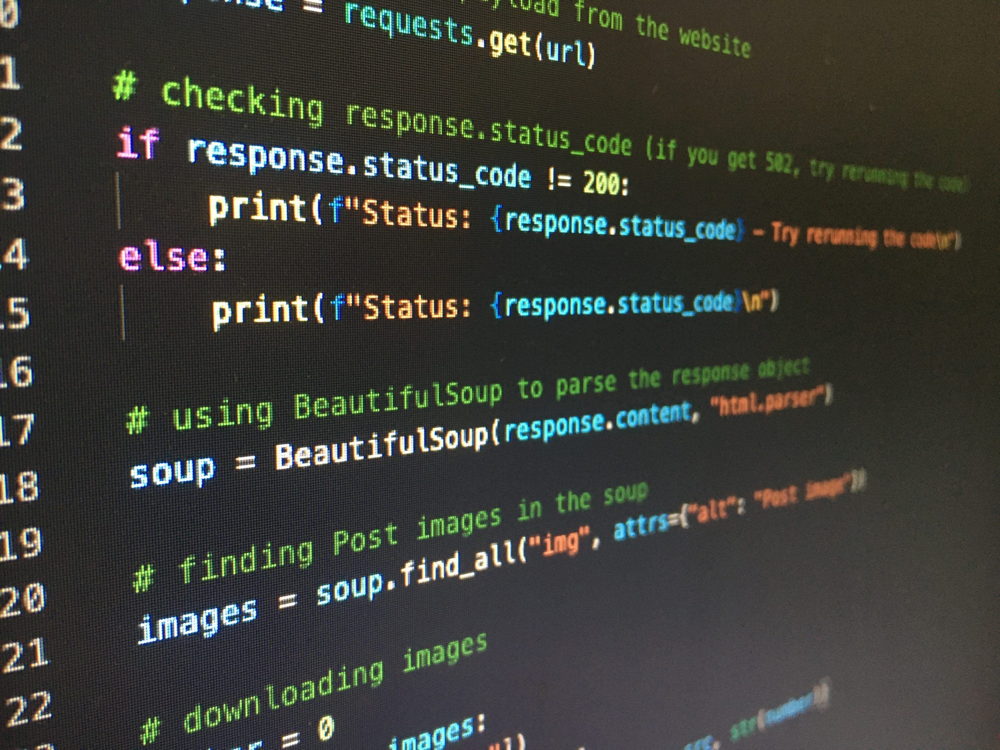

Alonso Garcia
Chicago, IL | 773-397-4170 | agarcia@hawk.illinoistech.edu
Summary
Motivated and hardworking Illinois Institute of Technology student majoring in Cybersecurity and Information Technology,
with an Associate of Science in Computer Science. Experience in technical problem solving, leadership, and teamwork
through college work, internships, and volunteer service. Passionate about technology, programming, and eager to learn new skills.
Education
- Illinois Institute of Technology, Chicago, IL - B.S. Cybersecurity and Information Technology (In progress)
- Richard J. Daley College, Chicago, IL- Associate of Science, Computer science (Earned may 2025)
- Eric Solorio Academy High School, Chicago, IL— High School Diploma (June 2025), GPA: 3.47
Project Experience
- PepsiCo/Frito-Lay Internship — Summer 2024
- Participated in business and leadership training
- Developed communication and teamwork skills in a corporate setting
- Exelon Summer Institute - Summer 2025
- Developed connections and leadership before the start of college
Athletics
- Cross Country (2021:2022) — Freshman & Sophomore Year
- Track & Field (2021:2022) — Freshman & Sophomore Year
Skills
- Basic Python and Java
- Some JavaScript
- Time Managment, Communication, Team Collaboration
- Fluent in English and Spanish

